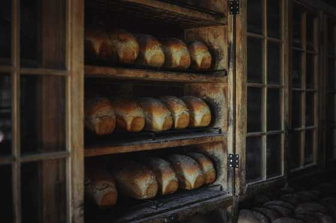
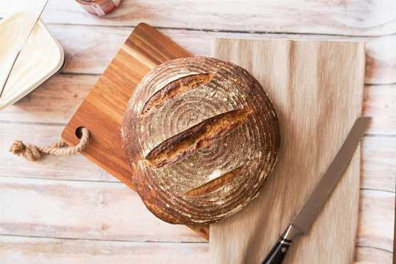

ABOUT
恵那から、手賀野へ。
Pan diversは、恵那市で持ち帰り専門のパン屋としてはじまりました。2025年4月、国道19号沿いの手賀野交差点付近・安藤ビルの1階に、2店舗目となる中津川店が開店しています。
中津川店は、焼きたてのパンに加えて、朝のモーニングとお昼のランチもいただける店です。店内は灰色を基調に、間接照明とドライフラワーが飾られた落ち着いた雰囲気で、テーブル席とカウンター席があると紹介されています。
パンは数種類の粉をブレンドし、生地に合わせて製法を使い分けて焼いていると紹介されています。人気のパンは、午前中のうちに売り切れることもあるそうです。
店名の意味・由来については確認できていません。「静かな灰色の空間で」という言葉は、紹介記事にある店内の様子から考えた制作側のイメージです。

VOICE
お客様の声
以下は創作したイメージ例で、実在のお客様の声ではありません。
イメージ例
朝のモーニングで、パンをトーストしながらゆっくり過ごせました。落ち着いた店内で、休日の朝にぴったりです。
ご来店のお客様(イメージ)イメージ例
焼きたてのパンの香りに誘われて立ち寄りました。種類が豊富で、どれにするか迷う時間も楽しかったです。
ご来店のお客様(イメージ)イメージ例
ランチのあとに、パンをお土産に買って帰りました。家でも店の雰囲気を思い出す一日になりました。
ご来店のお客様(イメージ)ACCESS
アクセス
- 店名
- Pan divers(パン ディベール) 中津川店
- 住所
- 〒508-0015 岐阜県中津川市手賀野361-1 安藤ビル 102
- 電話
- 準備中
- 営業時間
- 準備中
- 定休日
- 準備中
- @pan_divers